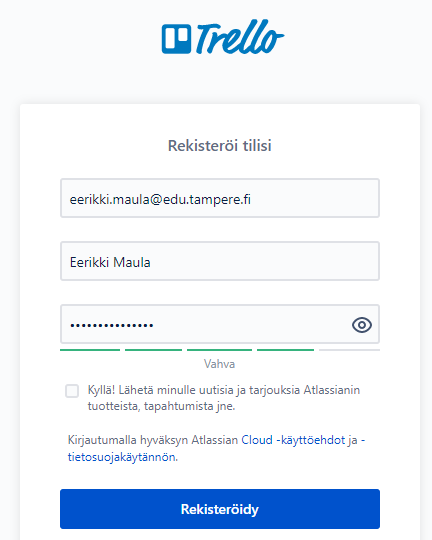
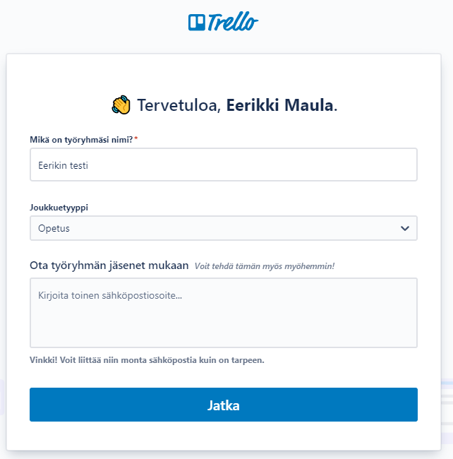
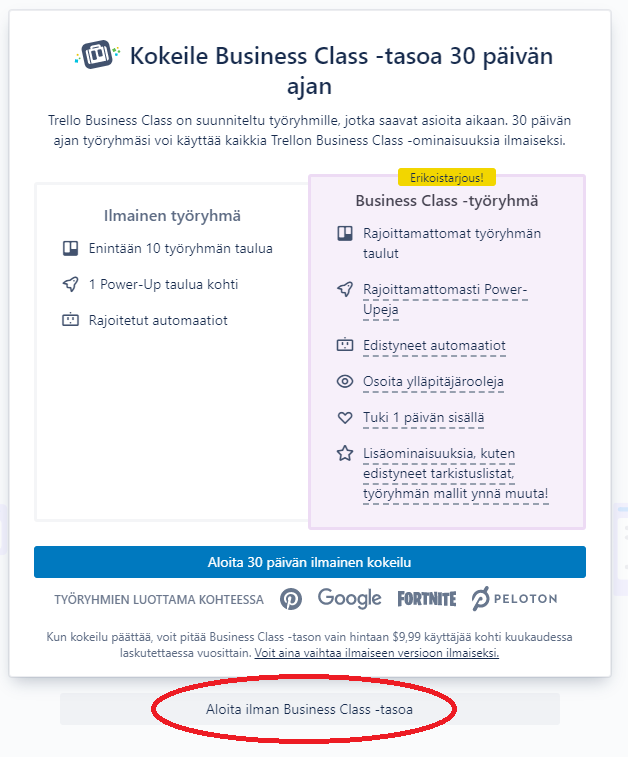

Kokeilaan trello-sovellusta projektinhallinnassa. Tehdään oma kokeilu ja kutsutaan muita käyttäjiä täyttämään tietoja.

Sinun ei tarvitse vielä lisätä työryhmään mukaan muita henkilöitä, sen voi tehdä myöhemmin.

Älä ota Business Class-tasoa käyttöön

Kokeile vahvistaa sähköpostiosoite O365:n sähköpostistasi.
Lukaise nopeasti Trello 101-pikaohje.
Taulu kuvaa yhtä projektia. Tee taulu nimeltä Kotisivut.
Lisää projektille (taululle) tehtäviä
Vaihda tilan taustakuvaa.
Kokeile mitä tehtävälle lisättävä "kuvaus" ja "toiminta" saavat aikaan.
Lähetä kutsu 1-2 muulle opiskelijalle. Jos et keksi ketään kutsuttavaa niin voit kutsua käyttäjän eerikki.maula@edu.tampere.fi mukaan "toteuttamaan" projektiasi. Lisää kutsutut käyttäjät tehtäviesi jäseniksi.
Kokeile pääsetkö toisen projektiin nyt katsomaan hänen tehtäviään ja muokkaamaan niitä.